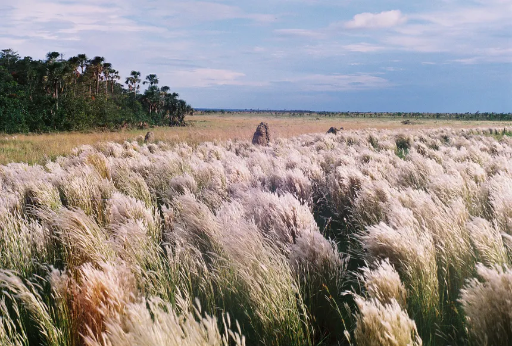
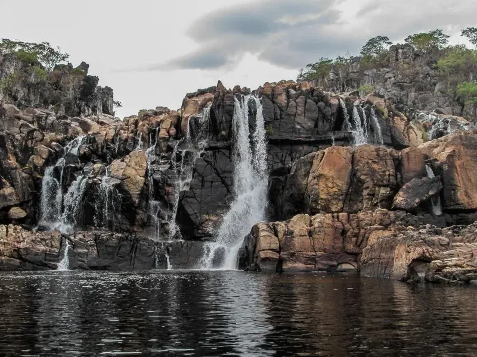
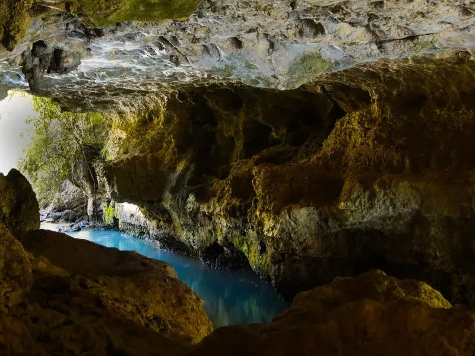
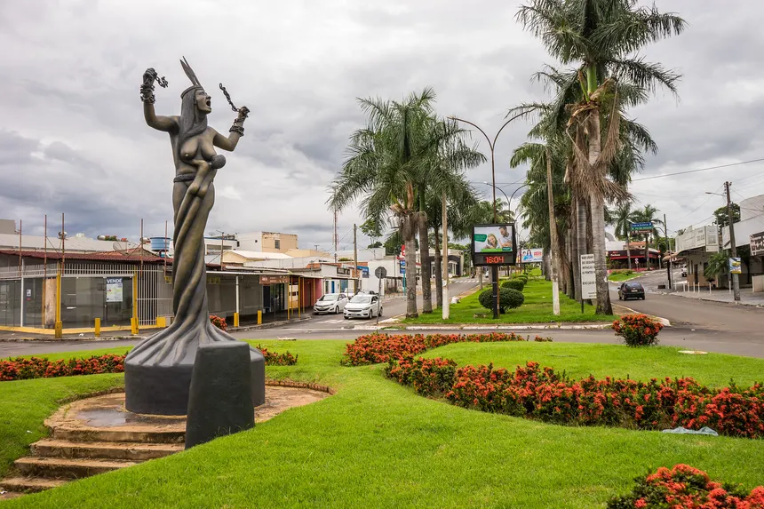

Imagens:




Curiosidade:
Mineiros é um município brasileiro do interior do estado de Goiás, Região Centro-Oeste do país. Localizado no sudoeste goiano a 420 km de Goiânia, 500 km de Cuiabá e 550 km de Campo Grande e 650 km de Brasília.
Em seu município se encontra a maior área do Parque Nacional das Emas.
Sua área é de 12.060,091 km², o que faz do município um dos maiores de Goiás em questão de território, representando 2.6159% da área do estado, 0.5558% da área do Centro-Oeste brasileiro e 0.1047% de todo o território do país.
Turismo:
No município existem cerca de 120 cachoeiras catalogadas. Pode-se destacar a Cachoeira da Pinguela, do Sucuri e a dos Dois Saltos. Existe também um conjunto de serras, cortadas pelos rios Formiguinha, Diamantino e Matrinchã.
Mineiros possui uma rica variedade de fauna, flora, piscinas naturais, grutas e abrigos, destacando-se o morro da Pedra Aparada e o Parque Nacional das Emas.